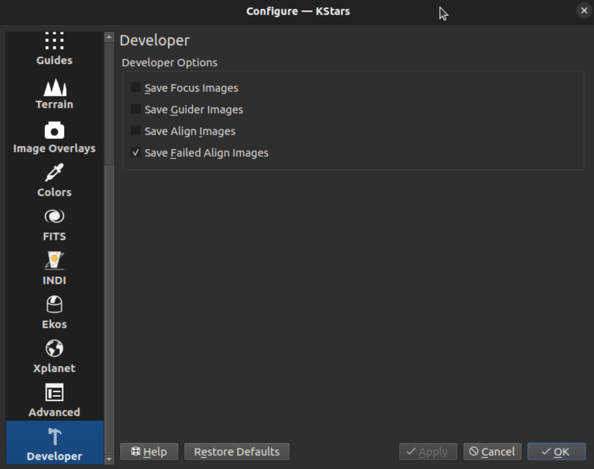

La page Développeurs fournit quelques cases à cocher qui peuvent aider à déboguer les problèmes avec KStars. Il y a des cases à cocher pour enregistrer les images dans le dossier des fichiers journaux qui aideront à débusquer les problèmes. Bien sûr ces images prendront de la place et cette fonctionnalité devrait être utilisée judicieusement.
Les images qui peuvent être enregistrées sont
toutes les images de mise au point,
toutes les images de guidage,
toutes les images d'alignement,
toutes les images qui ont échoué à la résolution.
Ces images sont enregistrées dans des dossiers situés au même niveau que le dossier des fichiers journaux. Leurs noms sont guide, autofocus, align et align / failed.